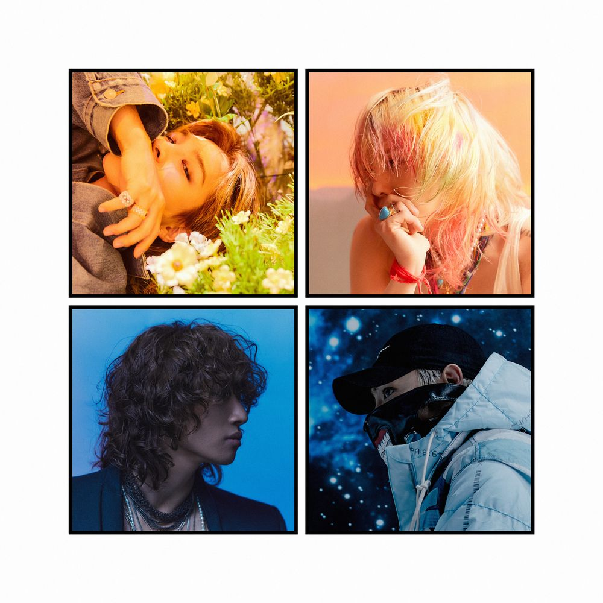

YG엔터테인먼트 소속의 4인조 보이 그룹이다.'거짓말'의 메가히트로 스타덤에 올랐다. 음악성,대중성이 매우 높은 평가를 받는 음악 그룹 중 하나이다. G-DRAGON은 거의 모든 BIGBANG 음반에 작사, 작곡, 편곡을 하였고 다른 멤버도 작사, 작곡을 하였다. 음악성은 10년 동안의 음반 발매로 확인이 되었고 음반 발매 이후 타이틀 곡부터 수록곡까지 모든 음악을 음악 순위에 진입시키는 가수들 중 하나이다.
음악에 있어서 BIGBANG은 멤버들의 실력적인 균형, 조화가 매우 뛰어나다. BIGBANG 멤버의 창법은 R&B 성향이다. 그리고 독특한 소리를 만들어내기도 한다. 블랙 뮤직을 바탕으로 한 R&B, 소울음악 창법을 사용하는 태양이 음악의 중심을 잡고 록 음악 창법을 사용하는 대성이 노래를 부른다. G-DRAGON은 매우 독특한 목소리로 랩을 하고 T.O.P은 중저음으로 플로우 랩을 한다. 이러한 것들이 모여서 BIGBANG 음악은 주로 G-DRAGON, 태양을 중심으로 힙합 음악, 팝 음악에 맞춰져 있지만 느린 템포의 음악은 대성, 태양의 상반되는 음색을 강조하는 것으로 가사 분배가 이루어지기도 한다.
